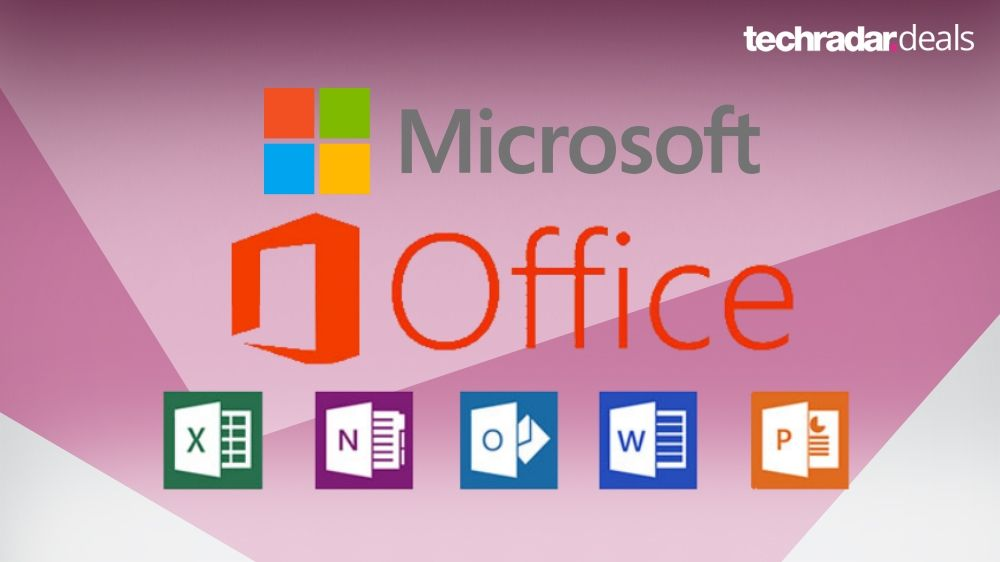

Here you'll find resources to help you master the various tools and applications in the Microsoft Office suite.
Microsoft Office is a powerful set of applications used for productivity, communication, and data management. Below are some of the key tools included in the suite:
Mastering Microsoft Word grants users the ability to craft professional documents with ease. Beneficial features such as spell check and templates can be used. Becoming savvy with Excel lets one manipulate data, form spreadsheets, and perform complex calculations. PowerPoint permits users to create captivating presentations. Outlook ensures proficient email communication, and it helps organize tasks and appointments.
Investing energy in learning these skills will boost productivity and open avenues of opportunity. Sharon, a graphic designer, initially found Microsoft Office challenging. Nevertheless, she enrolled in online tutorials and practiced frequently. In no time, Sharon had Word, Excel, PowerPoint, and Outlook at her fingertips. This expertise enabled her to secure design projects and gain recognition within her industry.
To up your proficiency in Microsoft Office, it’s important to understand its features and functionalities. Get a grip on Excel formulas, PowerPoint presentation techniques, and data organization in Word. Enhance productivity by exploring lesser-known tools in each application. Excel’s PivotTables help to analyze complex data sets. Word’s mail merge feature creates personalized mass communication. Plus, macros and automation can streamline tasks.
Go beyond the basics and investigate advanced features like conditional formatting in Excel. Also, use templates, themes, and transitions for creative presentations. With practice and online resources, you can use the full potential of Microsoft Office.
My colleague improved their work processes by attending webinars and seeking guidance from experts. They embraced a growth mindset and unlocked new horizons within the suite. Result: career growth and recognition. Improve your skills with dedication and effort. Utilize Microsoft Office effectively and discover endless opportunities for personal and professional development.
Email: support@learnmsoffice.com
Phone: +94 71 234 5678
Address: 123 Tech Street, Colombo, Sri Lanka